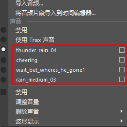
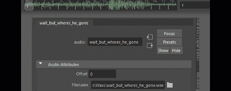

| 平台 | 音频文件格式 |
|---|---|
|
Linux® |
.aiff、.wav、.bwav |
|
Microsoft® Windows® |
.aiff、.wav、.bwav |
|
Apple® Mac OS® X |
.aiff、.wav、.bwav、.mp3 |
- 播放音频
-
播放音频文件
- 执行以下操作之一：
- 从“动画”(Animation)菜单集 (F4) 的音频(Audio)菜单中选择“导入音频...”(Import Audio...)。
- 在播放选项(Playback options)中的“音量”(Volume)图标
 上单击鼠标右键，然后选择“导入音频...”(Import Audio...)。
上单击鼠标右键，然后选择“导入音频...”(Import Audio...)。
- 从主菜单栏中选择“文件 > 导入”(File > Import)。文件浏览器可用于选择要导入的一个或多个声音文件的名称。
- 将文件从文件浏览器拖动到 Maya 建模视图中，或拖动到“时间滑块”(Time Slider)上。
声波的峰值在“时间滑块”(Time Slider)中可见，并且“时间滑块”(Time Slider)可以随时播放或拖动声音。
- 在播放控件(Playback Controls)中按“播放”(Play)或在波形上拖动鼠标以拖动音频。
重要： 若要在播放动画期间听到声音，必须将播放速度设置为恒定速率，这样 Maya 就可以确定以什么样的速度播放音轨。确保将“播放速度”(Playback Speed)设置为 24 fps x 1，否则无法听到音频。（若要对此进行检查，请单击播放选项(Playback Options)中的“动画首选项”(Animation Preferences)图标
 ，以打开“播放首选项”(Playback Preferences)。）
，以打开“播放首选项”(Playback Preferences)。）
- 将“播放速度”(Playback Speed)设定为“实时”(Real-time) (24 fps) 以实时播放声音轨迹（和动画）。
- 执行以下操作之一：
- 拖动音频
-
如果需要找到特定声音开始的具体时间，拖动将非常有用。例如，如果您的音轨包括“Hi Dave”，您可能需要找到与“D”声音开始处正好对应的帧，以使形成“D”声音的角色的嘴部与音轨同步。
拖动声音
- 在“时间滑块”(Time Slider)中拖动。声音轨迹将在您拖动时播放。
提示：通过使声音重复直到将当前时间指示器拖到“时间滑块”(Time Slider)中的下一时间，您可以比较轻松地找到声音起始点。若要使用该功能，请打开“首选项”(Preferences)窗口并启用“重复声音”(Repeat Sound)选项。
- 播放多个音频文件
-
可以使用音频(Audio)菜单或播放选项(Playback options)中的“音量”(Volume)图标
在 Maya 场景中播放多个音频文件。如果希望声音重叠，可以使用时间编辑器(Time Editor)。下文介绍了这两个过程。
- 在“音量”(Volume)图标 上单击鼠标右键，或打开音频(Audio)菜单（位于“动画”(Animation)菜单集 F4 中），然后选择“导入音频...”(Import Audio...)以将音频文件添加到场景中。
注： Maya 支持以下文件格式：
平台 音频文件格式 Linux®
.aiff、.wav、.bwav
Microsoft® Windows®
.aiff、.wav、.bwav
Apple® Mac OS® X
.aiff、.wav、.bwav、.mp3
- 对要导入的每个音频文件重复此操作。音频文件显示在“音频”(Audio)菜单中，此菜单位于“动画”(Animation)菜单集，在“音量”(Volume)图标上单击鼠标右键时也会显示此菜单。

音频文件显示在“声音”(Sounds)区域中，旁边有一个选项框

- 执行以下操作之一：
- 若要仅使用一个声音，请单击列表中相应音频文件旁边的选项。该声音的波形将显示在时间滑块(Time Slider)上。
- 若要播放场景中的所有声音，请选择“使用 Trax 声音”(Use Trax Sounds)。波形将变为实线。若要偏移文件以便它们在不同时间播放，请参见本主题中的创建音频偏移。
- 在“音量”(Volume)图标
- 创建音频偏移
-
如果希望音频文件在与场景中默认帧 0 不同的时间开始播放，请单击相应文件旁边的选项框
。将打开属性编辑器(Attribute Editor)，其中包含选定音频文件对应的设置。
注： 如果要对多个音频文件进行分层并交错，使它们在不同时间开始，请参见本主题中的在时间编辑器中偏移多个音频轨迹。有关导入带偏移的音频的说明，也可参见导入选项(Import Options)中的“音频偏移”(Audio Offset)设置。 - 在时间编辑器中偏移多个音频轨迹
-
在时间编辑器中偏移一个音频片段
- 通过在“时间滑块”(Time Slider)的“播放选项”(Playback options)的“音量”(Volume)图标 () 上单击鼠标右键，然后选择“将音频片段导入到时间编辑器”(Import Audio clip to Time Editor)，导入音频。每个音频文件会在“时间编辑器”(Time Editor)中成为一个音频片段。
- 使用所需偏移放置每个文件，或双击片段以访问其“属性编辑器”(Attribute Editor)选项卡并更改“偏移”(Offset)设置。
- 通过在“时间滑块”(Time Slider)的“播放选项”(Playback options)的“音量”(Volume)图标 (
- 有关详细信息，请参见将音频添加到时间编辑器(Add audio to the Time Editor)。